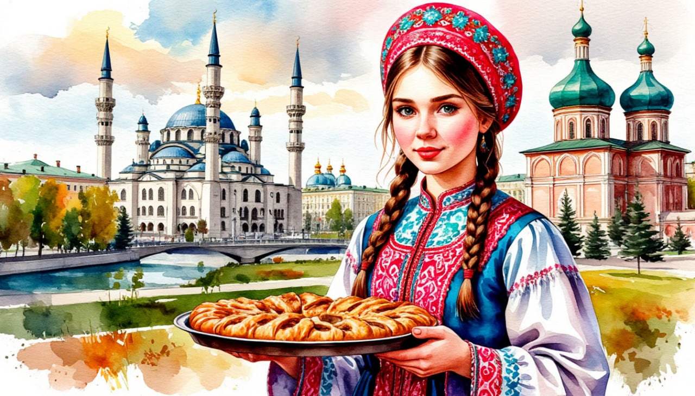

Казань, любовь моя!

Даты тура: 21 - 25 мая | 18 - 22 июня | 25 - 29 июня | 23 - 27 июля | 30 июля - 3 августа | 6 - 10 августа | 27 - 31 августа | 3 - 7 сентября | 10 - 14 сентября | 17 - 21 сентября
Стоимость тура:
- 24 900р - взрослый
- 24 800р- пенсионеры/студенты/школьники
- 32 000р./чел - одноместное размещение
По программе:
- - Обзорная экскурсия по Казани
- - Экскурсия по территории Кремля
- - Татарская деревня «Туган Авылым»
- - Экскурсия в древний город Болгар (за доп. плату/по желанию)
- - Теплоходная экскурсия по реке (за доп. плату/по желанию)
- - Храм всех религий
- - Раифский Богородицкий монастырь
- - Остров–град Свияжск
Программа тура:
1 день:
- 18-00- выезд из Костромы от ТРЦ "РИО" (Ул. Магистральная, 20), правый угол от центрального входа
2 день:
- Прибытие в Казань
- Завтрак в кафе города.
- Отправляемся на обзорную экскурсию, Вы получите наиболее полное представление о Казани и его достопримечательностях.
- Под руководством опытного гида Вы увидите:
- - старо-татарскую слободу, где проживали татары после завоевания Казани Иваном Грозным, с осмотром мечети Марджани
- - исторический центр города
- - озеро Кабан с его тайнами и легендами
- - здание-парусник татарского драматического театра им.Г.Камала
- - церковь Св. Варвары – символические «Ворота в Сибирь»
- - Казанский Федеральный Университет
- - протоку Булак
- - Площадь Свободы – культурный и административный центр Казани
- - административный комплекс на Площади Свободы, где располагаются Казанская Ратуша, Театр Оперы и Балета, Консерватория, здание Правительства РТ
- Экскурсия в Казанский кремль. Вы посетите мечеть «Кул Шариф» – главную мечеть города и республики,а так же Благовещенский собор – старейшее сооружения ансамбля Казанского кремля, увидите башню Сююмбике
- Обед в кафе города с мастер-классом по изготовлению Чак-чака.
- Экскурсия в Татарскую деревню «Туган Авылым». Осмотр ее территории. В самом центре Казани расположен известный развлекательный комплекс с древне татарским названием «Туган авылым», что в переводе означает «Родная деревня». Это настоящая татарская деревня, созданная среди городских высоток, где можно погрузиться в атмосферу традиционного быта и национальной культуры. Особой популярностью здесь пользуется необычный памятник, посвящённый традиционной татарской выпечке — эчпочмаку.
- Размещение в отеле
- Свободное время
- 19-00 (ориентировочно) Для желающих вечерняя экскурсия по Казани.
- Стоимость: 1500 руб/взрослый, 1300 р./дети до 16ти лет.
- Экскурсия по вечерней Казани — время, проведенное с радостью. Подсветка делает Казань волшебной и это стоит увидеть хотя бы раз. Хотя мы точно знаем, что все, кто увидел раз, захочет снова и снова. Красивые исторические и современные здания заиграют новыми гранями благодаря искусству осветителей. Фонари и фонтаны очаруют любого, кто неравнодушен к световым эффектам.
3 день:
- Завтрак в отеле
- Свободный день ИЛИ
- по желанию за дополнительную плату. СТРОГО ПРИ БРОНИРОВАНИИ ТУРА
- Экскурсионная программа «Волжская Болгария – цивилизация на Волге».
- Стоимость: 2200 р./взрослый, 2100 р. дети до 16ти лет, пенсионеры
- «Музей болгарской цивилизации». Здесь посетители познакомятся с богатой историей и культурой Волжской Булгарии со времени возникновения государства в 10 веке и до его заката в начале 15 века. В залах музея размещен подлинный археологический материал, полученный при археологических исследованиях городища.
- «Музей Корана» (Памятный знак в честь принятия ислама волжскими булгарами в 922 году). Музей Корана представляет собой здание, выполненное в стиле строений древнего Болгара. В основном зале находится священная книга — Коран. В цокольном этаже размещается экспозиция музея Корана.
- «Соборная мечеть» — памятник архитектуры XIIIв. и «Большой минарет», восстановленный в 2000 году. Соборная мечеть являлась главным зданием в средневековом Болгаре, где совершали намаз, религиозные обряды, произносили азан. В настоящее время памятник для мусульман-паломников также носит культовый характер. Приезжающие верующие читают намаз на Соборной мечети, особенно в дни празднования очередной годовщины принятия ислама.
- «Северный мавзолей» — мавзолей-усыпальница, памятник XIV века расположен напротив главного входа Соборной мечети. Сегодня внутри памятника действует выставка булгарских эпиграфических памятников. Сохранившиеся эпиграфические памятники имеют надпись, состоящую из коранического изречения, имени, родословной и даты смерти погребённого. Стелы являются частью богатого архитектурного наследия булгар.
- «Восточный мавзолей» — памятник XIV века, расположенный к востоку от Соборной мечети, по своей архитектуре принадлежит к типу мусульманских шатровых усыпальниц с выносным порталом. Восточный мавзолей, наиболее полно сохранившийся памятник среди остальных зданий булгарской архитектуры.
- «Ханский дворец». Памятник архитектуры середины ХIII века построен сразу после монгольского завоевания. Одно из первых белокаменных зданий на территории древнего Болгара, возведено раньше Соборной мечети. Сохранились фундамент и небольшая часть стен.
- Посещение Белой мечети. Она расположена за пределами Болгарского городища и гармонично вписана в окружающий ландшафт. Она выполнена из белого итальянского мрамора, цвет мечети олицетворяет мир и чистоту.
- Обед в кафе.
- Выезд в Казань.
- Свободное время
4 день:
- Завтрак в отеле
- Свободное время. Прогулка у Казанской Чаши ее осмотр.
- Для желающих за дополнительную плату - Теплоходная экскурсия по Казанке «Вдохновение столицей»
- СТРОГО ПРИ БРОНИРОВАНИИ ТУРА
- Стоимость: 2250 р./взрослый, 2150 р./ дети до 14ти лет, пенсионеры
- Приглашаем вас на 40- минутное путешествие по Казанке, которое начинается и заканчивается на причале у нового архитектурного символа города – Центра семьи Казан. Стоят рядом на высоких постаментах, отлитые из бронзы парные фигуры мифических барса и зиланта, величественные стражи города, панорамой которого мы будем любоваться с борта прогулочного теплохода.Вид на известные достопримечательности города, который открывается исключительно со стороны реки, может удивить не только гостей столицы, но и коренных казанцев.. Во время прогулки, подставив лицо свежему ветерку, вслушиваясь в плеск воды, вы не только полюбуетесь открыточными видами Казани с воды, но и узнаете: - какой была Казанка чуть более, чем полвека назад, сколько мостов соединяют берега Казанки в черте города. А еще вы сможете загадать желания, проходя под мостами - а эти желания всегда сбываются!
- Далее... Экскурсия в Раифский Богородицкий монастырь расположенный в 30 км от Казани, в заповедном лесу на берегу прекрасного лесного озера.
- - церковь во имя Святых преподобных Отцов в Синае и Раифе убиенных, от которой и произошло название монастыря;
- - церковь Веры, Надежды, Любови и матери их Софии;
- - озеро Раифское, "неквакующих" лягушек, великолепный сосновый лес;
- - часовню, освящённую патриархом с источником "святой воды"
- «Храм всех религий» (внешний осмотр) В основе – идея о том, что все религии Мира — едины. Все они ведут к свету и добру. Это – смелая идея соединить в одном архитектурном строении, казалось бы, не сочетаемое. Комплекс объединяет 16 Мировых религий (в том числе и исчезнувших).
- Экскурсия на Остров–град Свияжск. Вы увидите:
- - действующий Успенский монастырь с его архитектурным ансамблем 16-18 веков, включённый в список Всемирного наследия Юнеско;
- - бывший женский Иоанно–Предтеченский монастырь с внешним осмотром двух церквей: Церкви Живоначальной Троицы – единственной сохранившейся постройки деревянной крепости 16 в. со времён Ивана Грозного; Церкви во имя Сергия Радонежского – покровителя острова;
- - Собор Богоматери "Всех Скорбящих Радость" – величественный пятиглавый храм в нео-византийском стиле;
- - Рождественскую площадь – главную площадь Свияжска с осмотром архитектурного ансамбля;
- - Конный двор и Ленивый Торжок – сувениры, мастера – ремесленники;
- - смотровую площадку Рождественской площади, откуда открывается вид на живописный Свияжский Залив и храмовые комплексы монастыря Макарьевской пустыни и Церковь Константина и Елены
- После экскурсии у Вас будет возможность посетить церковные лавки, заказать требы, помолиться у святых икон, набрать воды из святого источника, а также прогуляться по берегу Раифского озера и купить Раифские сувениры.
- Обед в кафе города
- Выезд из Свияжска
- Возвращение домой.
5 день:
Прибытие в Кострому в первой половине дня (ориентировочно)
В стоимость тура входит:
- - проживание в гостинице*
- * отель "Амакс Сафар" (Номер реестровой записи: С162024014547)
- - питание: по программе
- - услуги гида-экскурсовода
- - экскурсионная программа
- - автобусное обслуживание по программе тура
Дополнительно оплачиваются (по желанию) СТРОГО ПРИ БРОНИРОВАНИИ ТУРА:
- - Экскурсия «Огни Казани» - 1500 р./взрослые, 1300 р./дети до 16ти лет.
- - Теплоходная экскурсия по Казанке «Вдохновение столицей» - 2250 р./взрослые, 2150 р./дети до 16ти лет, пенсионеры.
- - Экскурсионная программа «Волжская Болгария – цивилизация на Волге» - 2200 р./взрослые, 2100 р./дети до 16ти лет, пенсионеры
- Для бронирования необходимы данные паспорта РФ и свидетельства о рождении, если с вами путешествуют дети
- Предоплата – 50% от стоимости тура. Остаток за 30 дней до даты выезда.
- Любой тур можно оформить не выходя из дома. Подробнее: Тут
Стоимость тура не зафиксированы и могут быть изменены в большую или меньшую сторону в зависимости от уровня спроса в любой момент.
Время начала экскурсий и их порядок указано ориентировочно.
Фирма-исполнитель оставляет за собой право замены экскурсий без уменьшения общего объема экскурсионной программы.
По вопросам бронирования обращайтесь: